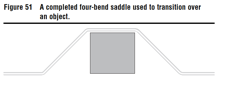
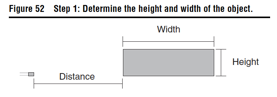
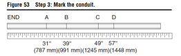
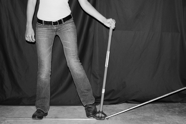
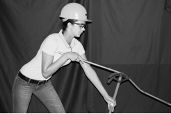
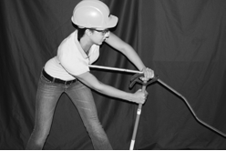
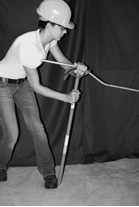
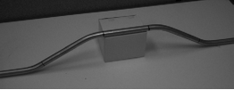

Four-bend saddles are used when a square or rectangular object is encountered on a conduit run.
A four-bend saddle is really just two offset bends that are combined to form one smooth transition over an object .
The same principles used in making an offset bend are needed, and the bending calculator included with the UGLY's app can be utilized to make this type of bend.

Step 1: Determine the height and width of the object.
Measure the height and the width of the object or obstruction. Also measure the distance from the last coupling to the front edge of the object.
In this example, the object is 10" (254 mm) wide, 4" (102 mm) high, and 30" (762 mm) from the last coupling.

Step 2: Determine the angles and perform the calculations.
Four-bend saddles are made in the same way as offset bends, except that two offsets are needed to complete the bend. Although you can use a variety of angles, be aware that 30� bends tend to work best.
In this example, 30� bends will be used.
Use the bending calculator in the UGLY's app to determine the measurements for this bend.
Because 30� angles are being used in this example, the shrink would be 1" (4" x _" = 1" [25 mm]). The distance between the bends would be
8" (4" x 2 = 8" [203 mm]).
Step 3: Mark the conduit.
Now that the calculations have been performed, you can mark the conduit.
The conduit will have four marks. These marks start with (A), which is the closest to the last coupling.
Because the object is 30_ (762 mm) from the last coupling, mark (A) should be at 31" (30" + 1" shrink = 31" [787 mm]).
Mark (B) should be 8" (203 mm) from mark (A). The third mark (C) is determined by the width of the object, which in this case is 10". Mark (C) should be 10" (254 mm) from mark (B).
Mark (D) should be the same as the distance between mark (A) and mark (B), which is 8" (203 mm).
In summary, mark (A) should be made at 31" (787 mm), mark (B) at
39" (991 mm), mark (C) at 49" (1245 mm), and mark (D) at 57" (1448 mm)

Step 4: Make the first bend.
Recall that four-bend saddles are made by bending two offsets opposite of each other.
Just as with an offset bend, the first bend is actually made at mark (B).
Place stub-up arrow on mark (B) and make a 30� bend. You can make this first bend on the floor.

Step 5: Make the second bend.
The second bend is made by picking up the conduit and bender, and turning them upside down, with the bender handle placed on the floor.
Slide the conduit to mark (A) and rotate it 180�. Use the stub-up arrow for this bend, just as you would for a regular offset bend.
Place the conduit under your arm and bend it to 30�

Step 6: Make the third bend.
Remove the conduit from the bender. Turn the conduit around so that the first two bends made are now pointing away from you.
Put the conduit back into the bender and slide it to mark (C) using the stub-up arrow. Place the conduit under your arm and bend it to 30�

Step 7: Make the fourth bend.
Leave the conduit in the bender. Slide it to mark (D) using the stub-up arrow.
Rotate the conduit 180� and align the conduit with the other bends to ensure a straight bend.
Place the conduit under your arm and bend it to 30�.

The conduit should fit over the 4" (102-mm) object.
